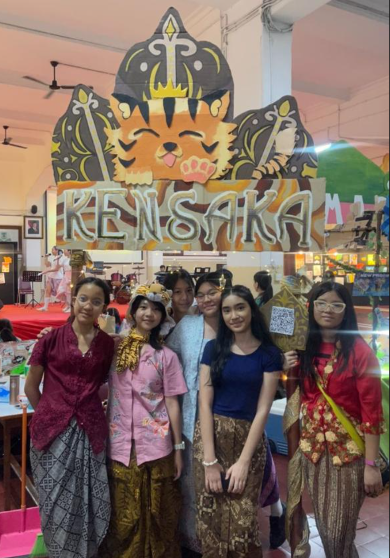
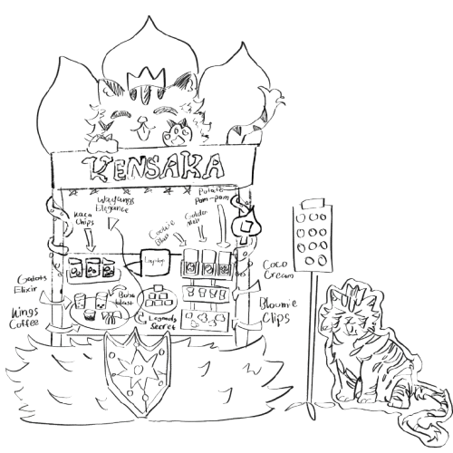

Dalam persiapan bazaar, aspek yang sangat penting adalah booth. Oleh karena itu booth harus direncanakan dengan teliti dan cermat. Hal yang paling penting untuk diperhatikan dalam pembuatan booth adalah penampilannya mau itu dari dekorasi ataupun penataan produk. Namun untuk membuat dekorasi tersebut kami perlu memperhatikan bahan yang digunakan agar kokoh dan dapat tahan saat bazaar. Tampilan booth ini juga merupakan bagian dari pembelajaran Integrated Learning untuk memenuhi kriteria penilaian bidang studi PPKn dan Kesenian.
Sebelum membuat booth bazar, kami membuat sketsanya terlebih dahulu. DIkarenakan tema kelompok kami adalah GatotKaca, kami ingin menggambarkan booth kami dari tokohnya sendiri dan juga daerahnya yaitu Jawa Tengah. Oleh karena itu kami menggunakan aspek-aspek yang menggambarkan element khas Jawa Tengah. Sebagian besar dari booth kami berbahan dasar dari kardus yang kami potong dan kami cat. Selain itu kami menggunakan pipa yang menjadi fondasi untuk tulisan dan dekorasi kami sepetri kardus, fairy lights, dan juga kain batik. Untuk cat kami menggunakan dua jenis yaitu cat tembok dan juga cat akrilik, terkhususnya untuk detail. Untuk lebih menonjolkan aksen budaya kami menggunakan kain batik sebagai hiasan yang diikat di pipa, sebagai taplak meja dan juga sebuah tempat untuk menyajikan QRIS yang berbentuk salah satu elemen wayang yang menggambarkan budaya Jawa dimana itu asal dari cerita GatotKaca. Dalam pembuatan dekorasi terkhususnya yang besar (tulisan KENSAKA, gunungan wayang, maskot, sayap dan perisai) kami membutuhkan waktu yang cukup lama karena kami terus mengulanginya dan merapikannya agar hasil akhir dapat bagus dan sesuai ekspektasi. Selain dekorasi yang kami buat sendiri kami juga membuat standee yang berupa maskot kami Rimao dan poster produk kami.


Dalam pembuatan dekorasi, kami juga mengalami beberapa tantangan salah satunya adalah ketepatan ukuran, campuran warna dan juga saat merakit semuanya menjadi satu. Hal ini terjadi karena dekorasi kami cukup besar dan membuatnya lebih susah untuk dibuat. Kami juga mengalami kesusahan dalam pencampuran warna yang akan digunakan. Selain itu kami juga mengalami kesusahan dalam membawa, merakit dan mendirikan booth kami dikarenakan ukuran dekorasi yang cukup besar. Namun pada akhirnya kami dapat menyelesaikan semua dekorasi kami dengan baik. Dari semua dekorasi yang kami buat jika ada yang tidak sesuai keinginan, kami menyelesaikan masalah itu dengan membuat alternatif. Salah satu contohnya adalah saat kami ingin membuat logo kami di bagian atas namun kami khawatir dengan banyak waktu tersisa karena logo kami memiliki elemen yang cukup banyak. Sebagai alternatif kami memilih untuk menggantikan logo kami dengan maskot kami.
Untuk booth, panitia bazaar menyediakan 2 meja dan sebuah softboard yang bersifat opsional untuk booth yang memiliki photobooth. Kami tidak menggunakan softboard karena kami membuat photobooth. Dengan adanya 2 meja kami memanfaatkan satu meja untuk memajang produk dan meja kedua untuk menaruh stok produk dan pengambilan PO (pre-order). Meja pertama terdapat rak display yang kami gunakan untuk memajang produk bloomie clip, coco cream dan makanan kami yaitu cookie blast, potato pom pom dan golden melt. Lalu ada tempat berbentuk lingkaran yang kami gunakan untuk memajang produk blind box kami yaitu the legends secret. Kami juga menaruh sebuah meja putar lingkaran untuk wayang elegance dan produk minuman kami yaitu boba bolt, gatot elixir, dan kings coffee. Untuk produk terakhir yaitu kaca chips, kami panjang dengan menggunakan sebuah rak kecil. Diantara semua panjangan tersebut kami menaruh salah satu laptop kami untuk memudahkan membuat list pembelian. Letak lokasi booth kami terletak di depan aula SMP Santa Ursula Jakarta di sebelah kiri. Meskipun tempat yang kami dapatkan cukup luas namun di daerah tersebut sangat ramai yang membuatnya lebih susah untuk bertransaksi, namun kami dapat menjalankan semuanya dengan lancar.